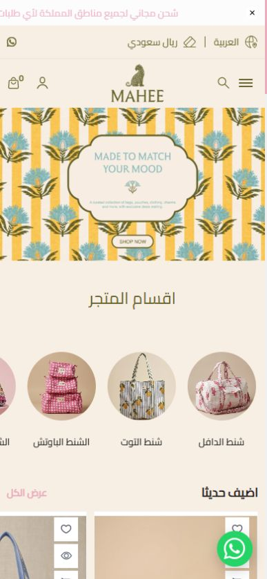
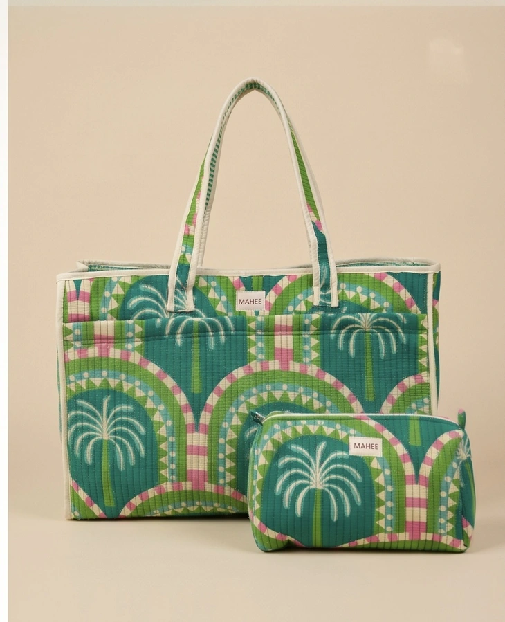

«أبغى شنطة تناسب يومي»
قد تأتي من صورة أو إعلان وتسأل: هل تتسع لأغراضي؟ كيف تبدو على الكتف؟ وما خامتها؟
ساعدها بهذه المعلوماتصورة على الكتف، المقاس بالسنتيمتر، صورة من الداخل، واسم وسعر واضحان.
BYMAHEE · من أول زيارة إلى إتمام الطلب
ما الذي ظهر أثناء تجربة المتجر؟ وكيف نجعل اختيار المنتج وإتمام الطلب أسهل على العميلة؟
شرح بالصور والمقترحات، مع التركيز على الموبايل والعميلة السعودية.

الألوان جميلة؛ بعض المعلومات والأزرار تحتاج توضيحًا.
من أين تبدأ؟
استطعنا اختيار منتج وإضافته والوصول إلى نموذج الشراء دون حساب. الصور وخيارات الدفع موجودة. ابدأ بإزالة الرسائل والأزرار التي تغطي المحتوى، ثم أظهر المقاس والخامة والتوصيل، ورتّب السلة حتى ترى العميلة طلبها أولًا. نحتاج متابعة الطلبات بعد التعديل لنعرف إن ساعد على زيادة الشراء.
زر واتساب يغطي جزءًا من «أضف إلى السلة». انقله بعيدًا عن الزر، وأوقف الرسائل التي تغطي المنتج.
02 · أظهر معلومات الشنطة مباشرةالعميلة تحتاج أن ترى الخامة والمقاس وما يأتي مع الشنطة، ثم تعرف موعد التوصيل وشروط الإرجاع.
03 · اعرض طلب العميلة أولًا في السلةابدأ بالمنتج الذي اختارته والكمية والمبلغ. ضع اقتراحات المنتجات الإضافية بعد ذلك.
هذه أمثلة نستخدمها لفهم حاجتها. نحتاج سؤال عميلات المتجر للتأكد منها؛ لا نفترض أن جميع السيدات السعوديات يفكرن بالطريقة نفسها.
بحسب صاحب المتجر، أغلب العملاء يتصفحون بالموبايل. كذلك ذكر تقرير إنترنت السعودية 2024 أن استخدام الهاتف المتنقل بلغ 99.4%. الرقم عام للسعودية، وليس نسبة عميلات ByMahee أو مبيعاته.
مصدر الرقم: هيئة الاتصالات والفضاء والتقنية · تقرير 2024قد تأتي من صورة أو إعلان وتسأل: هل تتسع لأغراضي؟ كيف تبدو على الكتف؟ وما خامتها؟
ساعدها بهذه المعلوماتصورة على الكتف، المقاس بالسنتيمتر، صورة من الداخل، واسم وسعر واضحان.
قد تحاول تنسيق الشنطة مع ملابسها، وتحتاج أن ترى اللون والخامة والحجم كما هي فعلًا.
ساعدها بهذه المعلوماتصور بإضاءة طبيعية، صورة قريبة للخامة، وآراء من اشترين المنتج عندما تتوفر.
قد يكون موعد الوصول والتغليف أهم لها من مشاهدة اقتراحات كثيرة. لا نعرف كم من طلبات المتجر للهدايا.
ساعدها بهذه المعلوماتموعد وصول متوقع حسب المدينة، وشكل التغليف إن كانت هذه الخدمة موجودة.
الحجم: ما الذي تحملينه يوميًا؟ وأي صورة تساعدك على معرفة حجم الشنطة؟
قبل الدفع: ما المعلومة التي تحتاجينها: الخامة، موعد الوصول، الإرجاع أم السعر؟
الأسماء: هل تعرفين معنى توت ودافل وباوتش، أم تفضّلين اسمًا يشرح النوع بالعربية؟
الهدية: هل موعد الوصول وشكل التغليف يؤثران في اختيارك؟
اخترنا شنطة، قرأنا معلوماتها، أضفنا قطعة واحدة، ثم وصلنا إلى نموذج الشراء دون حساب.
الخطوة 01
«ماذا يبيع المتجر؟ وأين أضغط؟»
الجيد: ألوان ونقشات متناسقة. ما يحتاج تعديلًا: الكلام على الصورة الرئيسية صغير وبالإنجليزية، والأسعار لا تظهر في أول شاشة. الضغط على الصورة فتح قسم الشنط.
شاهد المشكلة والحل: ملاحظة 4الخطوة 02
«أي قطعة تعجبني؟ وكم سعرها؟»
الجيد: صور المنتجات كبيرة وواضحة. ما يحتاج تعديلًا: بعض الأسماء والأسعار فاتحة، وتظهر نجوم بصفر، ورسالة عن شراء شخص آخر تغطي جزءًا من المحتوى.
شاهد المشكلة والحل: ملاحظة 1الخطوة 03
«أين قسم الشنط الذي أريده؟»
الجيد: القائمة بالعربية. ما يحتاج تعديلًا: الشنط تأتي بعد عدة أقسام، وداخلها قوائم إضافية حسب الخامة والشكل.
شاهد المشكلة والحل: ملاحظة 6الخطوة 04
«كيف أجد شنطة تناسب طلبي؟»
الجيد: يمكن ترتيب المنتجات حسب السعر، والبحث بكلمة «شنط» أعطى نتائج. ما يحتاج تعديلًا: لا يظهر اختيار حسب اللون أو المقاس، ورسالة الشراء قد تغطي معلومات المنتج.
شاهد المشكلة والحل: ملاحظة 7الخطوة 05
«هل هذه الشنطة تناسب أغراضي؟»
الجيد: أربع صور وزر شراء يبقى أسفل الشاشة. ما يحتاج تعديلًا: الخامة والمقاس خلف «اقرأ المزيد»، وواتساب يغطي جزءًا من زر «أضف إلى السلة».
شاهد المشكلة والحل: ملاحظة 10الخطوة 06
«هل أُضيفت الشنطة؟ وكم المبلغ؟»
أضفنا قطعة واحدة وظهرت في السلة بمبلغ 355 ريالًا. يمكن تعديل الكمية وفتح السلة الكاملة. لكن اقتراحات لمنتجات أخرى تظهر أيضًا في مساحة مراجعة الطلب.
شاهد المشكلة والحل: ملاحظة 12الخطوة 07
«هل هذا المنتج الذي اخترته؟ وكم سأدفع؟»
الجيد: تظهر رسالة بلوغ حد الشحن المجاني، وزر إتمام الطلب ثابت أسفل الشاشة. ما يحتاج تعديلًا: إعلان الشحن ومنتج إضافي يظهران قبل المنتج المختار، وواتساب يغطي طرف زر الإتمام.
شاهد المشكلة والحل: ملاحظة 12الخطوة 08
«كيف أبدأ إتمام الطلب؟»
المتجر يعمل على منصة سلة. حسب توضيح صاحب المتجر، قد تكون العميلة مسجّلة الدخول مسبقًا بحسابها على سلة. الصورة توثّق ما ظهر في جلسة الفحص؛ لا نعدّ تسجيل الدخول مشكلة.
الخطوة 09
«ما البيانات التي يطلبها المتجر؟»
يطلب الاسم الأول والأخير والجوال، والبريد الإلكتروني اختياري. هذا المسار جرّبناه لتوثيق الحقول فقط. توقفنا دون إدخال بيانات أو عنوان أو تنفيذ دفع.
المقصود أول شاشة تراها عند فتح المتجر. ما يظهر فيها يختلف حسب حجم الموبايل وشريط المتصفح.
أول شاشة على الموبايل
التعديل المقترح: جملة عربية واضحة وزر «تسوّقي الشنط»، ثم تقريب المنتجات وأسعارها من بداية الصفحة.
بعض الصور بجانب بعضها وتحتاج سحبًا يمينًا أو يسارًا. أظهر جزءًا من الصورة التالية، وأضف «عرض الكل» حتى تعرف أن هناك خيارات أخرى.
عندما تقارن العميلة المنتجات، قد تقطع الصورة الترويجية المقارنة. اجعل لكل صورة غرضًا واضحًا، مثل فتح قسم محدد.
ضع آراء العملاء في مكان ثابت داخل الصفحة. دع العميلة تقرأ المنتج دون رسالة مفاجئة عن شراء شخص آخر.
لكل ملاحظة صورة، وشرح لما ظهر، ولماذا قد يربك العميلة، وما الذي يمكن تعديله.
14 ملاحظة
فُحص على الموبايل · التعديل أبسط عادةً؛ يقدّر الفريق وقته بعد المراجعة.
لاحظنا أن رسالة عن شراء شخص آخر تظهر أثناء التصفح. في أكثر من صفحة غطّت جزءًا من صورة المنتج أو اسمه. وفي السلة غطّت جزءًا من ملخص الطلب.
العميلة تحاول قراءة المنتج الذي اختارته، لكن الرسالة تلفت نظرها إلى منتج آخر وتخفي معلومات تحتاجها. قد يشتتها هذا؛ لم نقس كم عميلة تركت الشراء بسببه.
أوقف هذه الرسائل في صفحة المنتج والسلة وإتمام الطلب. إذا أردت عرض آراء العملاء، ضعها في مكان ثابت داخل الصفحة حتى تقرأها العميلة عندما تريد.
افتح المنتج والسلة على الموبايل وانتظر ظهور الرسائل. يجب أن تبقى الصورة والسعر والطلب واضحة طوال الوقت.
فُحص على الموبايل · التعديل أبسط عادةً؛ يقدّر الفريق وقته بعد المراجعة.
لاحظنا على الموبايل أن زر واتساب يظهر فوق جزء من زر «أضف إلى السلة». وفي السلة يغطي طرف زر «إتمام الطلب». كما ظهر زران لواتساب في صفحة المنتج.
قد تحاول العميلة الضغط على «أضف إلى السلة» فتضغط على واتساب بدلًا منه، أو لا ترى الزر كاملًا.
احذف زر واتساب المكرر. انقل الزر المتبقي إلى مكان لا يغطي زر الشراء. وفي السلة وإتمام الطلب، اجعل المساعدة رابطًا واضحًا داخل الصفحة بدل زر عائم فوق الطلب.
جرّب على موبايل صغير وكبير. يجب أن يظهر زر «أضف إلى السلة» وزر «إتمام الطلب» كاملين، وأن يمكن الضغط على أي جزء منهما دون فتح واتساب.
فُحص على الموبايل والكمبيوتر · التعديل أبسط عادةً؛ يقدّر الفريق وقته بعد المراجعة.
عند فحص رابط زر واتساب الإضافي، وجدنا الرقم 966000000000. أما روابط واتساب الأخرى في الموقع فكانت مرتبطة برقم مختلف. لم نرسل رسالة لأي رقم.
إذا اختارت العميلة هذا الزر، فقد لا تصل إلى خدمة المتجر التي تريدها.
احذف الزر الإضافي الذي يحمل رقم الأصفار. تأكد أن كل زر واتساب في الموقع مرتبط برقم خدمة العملاء الصحيح.
افتح روابط واتساب من الرئيسية والمنتج والسلة. يجب أن تتجه كلها إلى رقم المتجر المعتمد، وألا يبقى رقم الأصفار في أي رابط.
فُحص على الموبايل والكمبيوتر · التعديل يحتاج ترتيبًا مع الفريق؛ يقدّر الفريق وقته بعد المراجعة.
الصورة الكبيرة أعلى الصفحة تحتوي على كلام بالإنجليزية وزر SHOP NOW صغير. الكلام جزء من الصورة نفسها، لذلك يصغر معها على الموبايل. ضغطنا على مكان الزر، وفتح قسم الشنط بنجاح.
النقشة جميلة، لكن العميلة قد لا تقرأ الكلام بسهولة أو تفهم بسرعة إلى أين تضغط وما الذي سيظهر لها.
ضع فوق الصورة أو بجانبها جملة عربية قصيرة مثل «شنط عملية بنقشات مميزة»، وزرًا واضحًا مكتوبًا عليه «تسوّقي الشنط». اجعل الكلام والزر منفصلين عن الصورة حتى يبقيا واضحين على الموبايل.
افتح الرئيسية على الموبايل. يجب أن تُقرأ الجملة بسهولة، ويظهر زر «تسوّقي الشنط» بوضوح، ويفتح قسم الشنط عند الضغط عليه.
فُحص على الموبايل والكمبيوتر · التعديل يحتاج ترتيبًا مع الفريق؛ يقدّر الفريق وقته بعد المراجعة.
على الموبايل ظهرت الصورة الرئيسية والأقسام وبداية صور المنتجات، لكن أسماء المنتجات وأسعارها كانت أبعد من أول شاشة. على الكمبيوتر كانت الصورة الرئيسية طويلة لدرجة أن الأقسام لم تظهر في أول شاشة.
الزائرة الجديدة لا ترى بسرعة مثالًا للمنتجات وأسعارها. تحتاج إلى النزول حتى تعرف إن كانت الأسعار تناسبها.
جرّب تقصير الصورة الرئيسية، ثم عرض الأقسام ومجموعة صغيرة من المنتجات بأسعار واضحة. حافظ على شكل المتجر الجميل، لكن قرّب المنتجات من بداية الصفحة.
اسأل زائرة جديدة: «ما الذي يبيعه المتجر؟ وكم سعر إحدى القطع؟». لاحظ إن كانت تجد الإجابة بسهولة، وتابع إن زادت الزيارات إلى صفحات المنتجات.
فُحص على الموبايل والكمبيوتر · التعديل يحتاج ترتيبًا مع الفريق؛ يقدّر الفريق وقته بعد المراجعة.
في قائمة الموبايل ظهرت بطاقات الهدايا وبوكسات الإهداء وأقسام أخرى قبل الشنط. وبعد فتح الشنط توجد قوائم أخرى حسب الخامة والشكل. على الكمبيوتر أيضًا يجب فتح زر القائمة حتى تظهر الأقسام.
العميلة التي جاءت لشراء شنطة قد تحتاج أن تبحث داخل عدة قوائم قبل أن تصل إلى النوع الذي تريده. ترتيب الهدايا أولًا قد يناسب مشتريات أخرى؛ نحتاج بيانات المتجر لاختيار الترتيب الأفضل.
اجعل الأقسام الرئيسية سهلة العثور: الشنط، الملابس، الإكسسوارات والهدايا. داخل الشنط، استخدم أسماء تشرح النوع أو الاستخدام. على الكمبيوتر اعرض الأقسام أعلى الصفحة مباشرة.
اطلب من عميلة جديدة أن تجد شنطة يومية. يجب أن تصل إليها بسهولة دون أن تسأل أين القسم أو ماذا يعني اسم الخامة.
فُحص على الموبايل · التعديل يحتاج ترتيبًا مع الفريق؛ يقدّر الفريق وقته بعد المراجعة.
وجدنا خيارات لترتيب المنتجات، مثل السعر والأكثر مبيعًا. لكن في الصفحة التي فحصناها لم يظهر خيار يعرض فقط الشنط بلون معين أو مقاس معين أو خامة معينة.
إذا كانت العميلة تريد شنطة بلون محدد، فهي مضطرة إلى النظر إلى المنتجات واحدًا واحدًا حتى تجدها.
إذا كان عدد المنتجات كبيرًا، أضف زرًا مثل «اختاري اللون والمقاس». بعد الاختيار، اعرض المنتجات التي تناسب طلبها فقط، مع خيار واضح لإلغاء الاختيار.
جرّب اختيار لون معين. يجب أن تظهر المنتجات المتاحة بهذا اللون، وأن يبقى الاختيار محفوظًا إذا فتحت منتجًا ثم رجعت إلى القائمة.
فُحص على الموبايل والكمبيوتر · التعديل يحتاج ترتيبًا مع الفريق؛ يقدّر الفريق وقته بعد المراجعة.
تأكدنا أن الواجهة المختارة عربية، لكن أسماء منتجات كثيرة بالإنجليزية. في المنتج الذي فحصناه، الاسم وعنوان الصفحة بالإنجليزية، ثم وصف عربي يتبعه وصف إنجليزي. والكلام عن المتجر أسفل الصفحة بالإنجليزية أيضًا. البحث بكلمة «شنط» أعطى نتائج في اختبارنا.
العميلة تبدأ التصفح بالعربية ثم تحتاج فهم الإنجليزية لتعرف اسم بعض القطع. كذلك اسم مثل «شنطة قطنية» يشرح المنتج ويساعد على ربطه بكلمات البحث العربية أكثر من اسم إنجليزي وحده؛ لا نملك بيانات ترتيب هذا المنتج في جوجل.
افصل اللغتين: النسخة العربية تكون أسماء المنتجات وأوصافها والصور الرئيسية والكلام أسفلها بالعربية، والنسخة الإنجليزية تكون بالإنجليزية. مثال للاسم العربي: «شنطة قطنية بنقشة النخيل مع حقيبة صغيرة». لا تضع الوصفين معًا داخل النسخة العربية. يمكن الاحتفاظ باسم العلامة MAHEE كما هو. استخدم الترجمة نفسها في المنتج والسلة والبحث وعنوان الصفحة.
راجع الرئيسية وقائمة المنتجات والمنتج والسلة في كل لغة. يجب أن تظهر نصوص عربية عند اختيار العربية، ونصوص إنجليزية عند اختيار الإنجليزية. تستطيع العميلة فهم نوع القطعة ومحتوياتها من الاسم والبحث عنها بالعربية.
فُحص على الموبايل · التعديل أبسط عادةً؛ يقدّر الفريق وقته بعد المراجعة.
لاحظنا نجمة وبجانبها الرقم 0 و(0) تحت المنتجات التي فحصناها. لم تظهر لها تقييمات مسجلة، رغم وجود آراء عامة عن المتجر في الرئيسية.
قد تفهم العميلة أن تقييم المنتج صفر من خمسة، بينما المقصود أنه لم يحصل على تقييم بعد. نحتاج سؤال عميلات للتأكد من طريقة فهمه.
عندما لا توجد تقييمات، أخفِ النجمة والصفر أو اكتب «لا توجد تقييمات بعد». اعرض النجوم عندما توجد تقييمات حقيقية لهذا المنتج.
راجع منتجًا لا توجد له تقييمات. يجب أن يظهر ذلك بوضوح، دون أن يبدو كأنه حصل على تقييم سيئ.
فُحص على الموبايل والكمبيوتر · التعديل يحتاج ترتيبًا مع الفريق؛ يقدّر الفريق وقته بعد المراجعة.
قبل الضغط على «اقرأ المزيد» يظهر وصف قصير جدًا. بعد الضغط تظهر الخامة والتبطين والمقاسات بالبوصة، ثم وصف إنجليزي يكرر المعلومات. توجد أربع صور للمنتج.
العميلة تريد أن تعرف: هل الشنطة كبيرة؟ هل تتسع لأغراضي؟ وما خامتها؟ قد تفوتها هذه المعلومات إذا لم تفتح الوصف، والمقاس بالبوصة قد لا يكون مألوفًا لها.
ضع ثلاث معلومات واضحة قرب السعر: الخامة، المقاس بالسنتيمتر، وما الذي يأتي مع الشنطة. أضف صورة على الكتف أو بجانب أغراض يومية حتى يظهر حجمها الحقيقي.
افتح المنتج دون الضغط على «اقرأ المزيد». يجب أن تجد الخامة والمقاس والمحتويات مباشرة. المقاس 19×17×6 بوصة يساوي تقريبًا 48.3×43.2×15.2 سم؛ تأكد أي رقم للطول والعرض والعمق قبل كتابته.
فُحص على الموبايل والكمبيوتر · التعديل يحتاج ترتيبًا مع الفريق؛ يقدّر الفريق وقته بعد المراجعة.
في صفحة المنتج ظهرت معلومات عن التوفر والدفع وتمارا، لكن لم نجد قرب زر الشراء موعد توصيل حسب المدينة أو شرحًا مختصرًا للإرجاع. صفحة الشروط تذكر 24 ساعة للإرجاع أو الاستبدال، مع استثناءات وتكاليف أخرى.
قبل دفع 355 ريالًا، قد تسأل العميلة: متى يصل الطلب؟ وإذا لم يناسبني، هل أستطيع إرجاعه؟ البحث عن هذه الإجابات في صفحة أخرى يزيد الخطوات المطلوبة منها.
قرب زر الشراء، اعرض موعدًا متوقعًا حسب المدينة وملخصًا واضحًا لشروط الإرجاع مع رابط التفاصيل. يجب أن يطابق الكلام شروط المتجر الفعلية. راجع الشروط مع المسؤول عنها قبل تعديلها.
تستطيع العميلة معرفة تكلفة الشحن والموعد المتوقع وشروط الإرجاع قبل الدفع. يجب ألا يَعِد ملخص المنتج بإرجاع مجاني أو مدة مختلفة عن الشروط المعتمدة.
فُحص على الموبايل · التعديل يحتاج ترتيبًا مع الفريق؛ يقدّر الفريق وقته بعد المراجعة.
أعلى السلة ظهر إعلان كبير عن الشحن المجاني للطلبات التي تبلغ 300 ريال، ثم اقتراح لمنتج إضافي، وبعده المنتج المختار. كان مبلغ القطعة التي جرّبناها 355 ريالًا، وزر «إتمام الطلب» ثابتًا أسفل الشاشة.
عند فتح السلة، تريد العميلة التأكد من المنتج والكمية والمبلغ. لكنها ترى اقتراحًا جديدًا قبل أن ترى طلبها بوضوح.
اعرض المنتج المختار والكمية والمبلغ أولًا. اختصر رسالة الشحن المجاني إلى سطر. ضع الاقتراح الإضافي بعد ملخص الطلب، واعرض فيه منتجات متاحة فقط.
افتح السلة على الموبايل. يجب أن ترى المنتج الذي اخترته والمبلغ بسهولة، وأن تستطيع إكمال الطلب دون أن تعيقك اقتراحات أخرى.
فُحص على الموبايل والكمبيوتر · التعديل أبسط عادةً؛ يقدّر الفريق وقته بعد المراجعة.
لاحظنا أن الأسعار مكتوبة بالوردي الفاتح على خلفية فاتحة. عند فحص اللون وجدنا أن الفرق بينهما ضعيف. في المقابل، الكتابة الداكنة داخل زر «أضف إلى السلة» أوضح.
قد تضطر العميلة إلى التدقيق حتى تقرأ السعر، خاصة على الموبايل في ضوء قوي.
اكتب الأسعار بلون داكن، مثل الزيتوني أو لون النص الأساسي. يمكن الاحتفاظ بالوردي في الخلفيات والزينة. اطلب من المصمم أو المطور التأكد أن الكلام واضح على خلفيته.
افتح قائمة المنتجات وصفحة المنتج على الموبايل. يجب أن تقرأ السعر بسهولة دون تكبير الشاشة. التفاصيل الرقمية لفحص الألوان موجودة في قسم المصادر لمن يحتاجها.
فُحص على الموبايل · التعديل يحتاج ترتيبًا مع الفريق؛ يقدّر الفريق وقته بعد المراجعة.
وجدنا أن زر إغلاق الإعلان وأزرار القائمة والبحث صغيرة. كما لم يظهر اسم يشرح زر البحث عند فحصه بأداة تقرأ محتوى الشاشة بصوت، وهي أداة يستخدمها بعض ضعاف البصر.
قد تضغط العميلة بجانب الزر بدلًا منه. ومن تستخدم القراءة الصوتية قد لا تعرف وظيفة زر لا يحمل اسمًا واضحًا.
كبّر مساحة الضغط حول الأزرار، حتى لو بقي شكل الأيقونة صغيرًا. اطلب من المطور إضافة أسماء واضحة مثل «بحث» و«سلة التسوق»، بحيث تقرؤها أدوات القراءة الصوتية.
جرّب الأزرار بيد واحدة على موبايل صغير، ثم جرّب القراءة الصوتية والتنقل بلوحة المفاتيح. يجب أن تكون وظيفة كل زر واضحة ويسهل الوصول إليه.
جرّبنا الرئيسية والمنتج على الكمبيوتر، والرحلة حتى نموذج الشراء دون حساب على الموبايل.
الصورة الرئيسية طويلة؛ أقسام المتجر لا تظهر قبل نزول الصفحة على شاشة الكمبيوتر التي جرّبناها.
افتح الصفحة الأصلية في المتجر| المكان | على الموبايل | على الكمبيوتر | ماذا نعدّل؟ |
|---|---|---|---|
| الصورة الرئيسية | الكلام صغير لأن الصورة تصغر | الصورة طويلة وتؤخر ظهور الأقسام | صورة مناسبة لكل شاشة مع كلام وزر واضحين |
| أقسام المتجر | تحتاج فتح القائمة ثم أقسام داخلية | الأقسام مخفية داخل زر القائمة رغم وجود مساحة | تبسيط القائمة، وإظهار الأقسام أعلى الصفحة على الكمبيوتر |
| صفحة المنتج | صورة طويلة وزر شراء يبقى أسفل الشاشة | الصورة والمعلومات بجانب بعضهما | الإبقاء على سهولة الوصول لزر الشراء، وإظهار الخامة والمقاس |
| رسائل الشراء | تغطي جزءًا كبيرًا من الشاشة | تغطي بعض معلومات المنتج والأزرار | إيقافها في المنتج والسلة وإتمام الطلب |
| واتساب | يغطي جزءًا من زر الشراء | أقل تغطية للأزرار في الصورة التي فحصناها | زر واحد بعيد عن أزرار الشراء |
| السلة وإتمام الطلب | فحصنا حتى نموذج الشراء دون حساب | لم نفحص هذه الخطوات كاملة بشكل مستقل | تجربتها أيضًا على الكمبيوتر بعد التعديل |
الصورة والمعلومات بجانب بعضهما، لكن رسالة الشراء تظهر فوق منطقة المعلومات والأزرار. السعر لونه فاتح.
افتح الصفحة الأصلية في المتجرعلى شاشة موبايل أصغر بقي واتساب قريبًا من أزرار الشراء. الفحص بتغيير حجم الشاشة في المتصفح؛ لم نستخدم هاتفًا فعليًا.
افتح الصفحة الأصلية في المتجرهذا مثال لما نقترحه داخل التقرير. لم يُطبّق على المتجر الأصلي.

الترتيب من أعلى الصفحة إلى أسفلها
مثل «شنط عملية بنقشات مميزة»، مع صورة استخدام وزر «تسوّقي الشنط».
مثل شنط يومية، شنط سفر وشنط صغيرة. اسأل العميلات إن كانت هذه الأسماء مفهومة قبل اعتمادها.
اعرض مجموعة مختارة أو المنتجات الجديدة. استخدم «الأكثر مبيعًا» فقط إذا أكدت بيانات المتجر ذلك.
ضع التقييم بجانب المنتج الذي يخصه، مع صور العميلات إذا توفرت وبإذنهن.
اكتب شرحًا مختصرًا، مع رابط الشروط الكاملة.
#F8EFE4#EAABBC#67622A#231F1Eاحتفظ بخط الموقع وألوانه. استخدم الوردي في الخلفيات والزينة، واللون الداكن للأسعار والكتابة المهمة. قلّل الرسائل والأزرار التي تظهر فوق الصفحة، واحجز مساحة الصور قبل تحميلها حتى لا يتحرك الكلام فجأة أثناء القراءة.
اسم يشرح الشنطة ومحتوياتها، ثم الخامة والمقاس بالسنتيمتر. قرب زر الشراء: التوصيل وشروط الإرجاع.
المنتج والكمية، ثم المبلغ والشحن، ثم زر «إتمام الطلب». الاقتراح الإضافي يأتي بعد مراجعة الطلب.
اعرض المبلغ والشحن بوضوح قبل الدفع، واشرح أي خطأ بجانب الحقل الذي يحتاج تصحيحًا.
يمكنك وضع علامة على البنود لمتابعتها. العلامات تُحفظ في متصفحك فقط، ولا تعني أن التعديل طُبّق على المتجر.
تحسينات أساسية تجعل صفحات المتجر أوضح لجوجل ولمن تبحث عن شنطة. نبدأ بالمنتجات واللغة، ثم نتابع النتائج.
للرئيسية عنوان ووصف بالعربية يشرحان الشنط والإكسسوارات. توجد أيضًا روابط تعرّف جوجل بالنسخة العربية والإنجليزية في الرئيسية والمنتج. وصف المنتج بالعربية موجود، وكذلك معلومات منظّمة عن السعر والتوفر. هذه أساسيات جيدة؛ لا نحتاج البدء من الصفر.
في المنتج الذي فحصناه، الاسم وعنوان الصفحة بالإنجليزية داخل النسخة العربية. والوصف يجمع اللغتين، ووصف نتيجة البحث يبدأ بكلمتين ملتصقتين. نبدأ باسم عربي يشرح القطعة، ثم وصف مرتب وواضح. شاهد ملاحظة خلط اللغتين.
اختر لكل صفحة موضوعًا يناسب ما تبيعه فعلًا. هذه أمثلة من منتجات المتجر؛ حجم البحث عنها لم يُقَس بعد.
على الموبايل، اسحب الجدول يمينًا ويسارًا لقراءة الأعمدة.
| الصفحة | كلمات مقترحة | كيف نستخدمها؟ |
|---|---|---|
| الرئيسية | متجر شنط نسائية · شنط نسائية السعودية | تعريف مختصر بالمتجر ومنتجاته والشحن داخل المملكة. |
| قسم شنط التوت | شنط توت نسائية · شنط قطنية | اسم القسم ووصف قصير للأنواع المتاحة. استخدم «قطنية» للمنتجات القطنية فقط. |
| قسم الكلاتش | شنط كلاتش · شنط صغيرة نسائية | وصف يوضح الأشكال والمقاسات الموجودة فعلًا في القسم. |
| منتج الشنطة الخضراء | شنطة قطنية بنقشة النخيل · شنطة مع حقيبة صغيرة | اسم ووصف خاصان بهذا المنتج، بدل كلمات عامة لكل المتجر. |
| قسم الأرواب | أرواب نسائية | صفحة للمنتجات المتاحة في هذا القسم. أضف الخامة فقط إذا كانت مؤكدة. |
لا تكرر الكلمات في كل سطر، ولا تضع قائمة كلمات مخفية. اكتب للعميلة بشكل طبيعي. مرجع جوجل: أساسيات تحسين البحث.
ترجم اسم المنتج ووصفه واسم القسم والكلام أسفل الصفحة في النسخة العربية. اجعل النصوص الإنجليزية في النسخة الإنجليزية. اسم العلامة MAHEE يبقى كما هو.
كيف نتأكد؟ افتح المنتج بكل لغة: الاسم والوصف وعنوان الصفحة تكون بلغة النسخة المختارة.
جوجل: عنوان الصفحة يطابق لغة محتواهاعنوان الصفحة هو الكلام الذي يظهر في تبويب المتصفح وقد يستخدمه جوجل في نتيجة البحث. اجعله واضحًا ومختلفًا لكل منتج وقسم، ويذكر نوع القطعة.
مثال مقترح: «شنطة قطنية بنقشة النخيل مع حقيبة صغيرة | MAHEE». استخدم اسمًا عربيًا مطابقًا داخل صفحة المنتج. عنوان الرئيسية العربي الموجود بداية جيدة.
جوجل: كتابة عناوين واضحة للصفحاتاكتب جملة أو جملتين تلخصان المنتج. أصلح الكلمات الملتصقة في الوصف الحالي، واجعل لكل منتج وصفًا يخصه. قد يعرض جوجل نصًا آخر من الصفحة.
مثال مقترح: «شنطة قطنية بنقشة النخيل، مبطنة وبمقابض للحمل على الكتف، مع حقيبة صغيرة مرفقة. شاهدي المقاسات وتفاصيل الشحن داخل السعودية». هذا الوصف يساعد الزائرة على فهم النتيجة واختيارها؛ لا يضمن تحسن ترتيبها.
جوجل: الوصف الظاهر أسفل نتيجة البحثاكتب الخامة والمقاس وما يأتي مع القطعة وطريقة استخدامها والعناية بها إذا كانت معتمدة. لا تنسخ وصفًا واحدًا لكل الشنط، ولا تضف كلامًا طويلًا لمجرد تكرار الكلمات.
كيف نتأكد؟ تستطيع العميلة تمييز هذا المنتج عن غيره من الاسم والوصف. راجع أيضًا إظهار الخامة والمقاس بوضوح.
جوجل: كتابة محتوى مفيد وواضحصور المنتج الذي فحصناه تحمل اسمه الإنجليزي. في النسخة العربية، اكتب وصفًا قصيرًا يشرح ما في كل صورة، مثل «شنطة قطنية خضراء بنقشة نخيل مع حقيبة صغيرة». للصورة الجانبية اذكر أنها جانبية، بدل تكرار وصف لا يشرحها.
كيف نتأكد؟ اطلب من الفريق مراجعة وصف الصور في القالب. اجعلها واضحة وخفيفة التحميل دون فقد تفاصيل المنتج.
جوجل: تحسين وصف الصور وعرضهااستخدم روابط مثل «شنط توت قطنية» تفتح القسم المناسب، وأظهر المنتجات داخله. يمكن وضع فقرة قصيرة تشرح القسم بدل أن يكون مجرد صور.
كيف نتأكد؟ تستطيع العميلة الوصول من الرئيسية إلى القسم ثم المنتج. لا تغيّر الروابط الحالية لمجرد جعلها عربية؛ اسم الرابط والنص داخل الصفحة هما بداية العمل هنا.
جوجل: روابط تساعد على فهم الصفحات والعثور عليهااربط المتجر بأداة جوجل المجانية Search Console إن لم تكن مربوطة. تعرض الكلمات التي ظهر بها المتجر، وعدد مرات الظهور والضغط، ومتوسط الترتيب، والصفحات التي لم يضفها جوجل إلى نتائجه.
كيف نستخدمها؟ سجّل وضع الصفحات قبل التعديل. بعدها قارن فترات متساوية مع مراعاة المواسم والعروض، وراجع البحث من السعودية والموبايل. اعتمد الكلمات التي ظهرت فعلًا لتطوير القائمة المقترحة.
جوجل: البدء بأداة متابعة البحثصفحة المنتج تحتوي أصلًا على معلومات منظّمة لجوجل عن المنتج: السعر 355 ريالًا والتوفر أثناء الفحص. اطلب من المطور فحصها بأداة جوجل؛ وجودها وحده لا يعني أن كل شيء صحيح أو أن نتيجة خاصة ستظهر.
كيف نتأكد؟ السعر والتوفر يطابقان الصفحة، وأي تقييم يعكس آراء حقيقية. راجع الموجود في سلة والقالب قبل إضافة أداة أخرى تكرر المعلومات.
جوجل: معلومات المنتجات في نتائج البحثاختر أهم المنتجات حسب مبيعات المتجر. ابدأ بخمسة: الاسم العربي، عنوان الصفحة، الوصف، ووصف الصور. طبّق فصل اللغتين على الرئيسية أيضًا.
رتّب أسماء الأقسام وروابطها، واكتب تعريفًا قصيرًا لكل قسم. كرر العمل على باقي المنتجات، بناءً على ما تبحث عنه العميلات فعلًا.
راجع ظهور الصفحات والكلمات والضغطات في Search Console، ثم تابع الزيارات والطلبات في بيانات المتجر. الترتيب يحتاج وقتًا ويتأثر بالمنافسة؛ لا نحكم من يوم واحد.
الفحص بتاريخ 11 أكتوبر 2026 للرئيسية العربية وصفحة المنتج المرتبطة أعلاه. يوجد title وmeta description في الصفحتين، وhtml lang="ar". في المنتج، الاسم الظاهر داخل h1 والعنوان بالإنجليزية. ترجمة العنوان والمحتوى أهم من إضافة وسم لغة آخر.
روابط hreflang موجودة للغات ar وen وx-default، ويوجد canonical يشير إلى الصفحة العربية نفسها في الصفحتين. لم نفحص كل الصفحات الإنجليزية أو التبادل بين اللغات. حافظ على الموجود وافحص الربط المتبادل بين الصفحات المكافئة، ثم ترجم المحتوى داخل كل نسخة. مرجع جوجل للنسخ اللغوية.
وصف المنتج المستخدم لنتيجة البحث يبدأ بكلمتين ملتصقتين. راجع الحقل في سلة وما يولده القالب، ثم اختبر الصفحة بعد الحفظ. لم ندخل لوحة تحكم سلة؛ مكان الحقول وإمكانية التعديل يحتاجان مراجعة إعدادات المتجر والقالب.
توجد بيانات Product داخل JSON-LD @graph، وتشمل offers بسعر 355 وعملة SAR وحالة InStock وقت الفحص. لم ننفذ اختبار صلاحية كاملًا. افحص بواسطة Rich Results Test، دون إنشاء نسخة مكررة من البيانات.
في Search Console: تحقق من ملكية النطاق، أرسل رابط خريطة الموقع التي يولدها المتجر بعد التأكد منه، وافحص عينة من روابط المنتجات وتقرير فهرسة الصفحات. لم نفحص ملف منع محركات البحث أو خريطة الموقع، ولم نثبت وجود مشكلة فيهما. لا توجد نتائج أداء أو حجم بحث أو تقرير ترتيب فعلي في هذه المراجعة.
ملف الملاحظات التي تحققنا منها في الصفحة. الأمثلة التحريرية مقترحة للتطبيق، وليست تغييرات منفذة في المتجر.
تحسن شكل الصفحة وحده لا يكفي. نريد أن تفهم العميلة المنتج وتجد الأزرار وتكمل الخطوات بسهولة.
تجربة بسيطة مع عميلاتك
اختر عميلات جديدات وأخريات اشترين من قبل. هذه المجموعة تساعدك على اكتشاف الصعوبات، لكنها لا تمثل جميع السعوديات.
راقب: أين تتردد؟ هل تطلب مساعدة؟ هل فهمت المقاس والمبلغ؟ دعها تحاول أولًا دون أن تشرح لها أين تضغط.
فحص مع فريق المتجر
السرعة: اطلب من المطور فحص وقت ظهور الصفحة، وسرعة استجابة الأزرار، وهل تتحرك عناصر الصفحة أثناء تحميلها. لم نقس هذه الأمور في التقرير الحالي.
| التعديل | السؤال الأساسي | ماذا نتابع أيضًا؟ |
|---|---|---|
| إبعاد ما يغطي أزرار الشراء | من كل 100 زائرة لصفحة المنتج، هل أصبح عدد من يضفن إلى السلة أكبر؟ | هل قلت طلبات المساعدة والأخطاء؟ |
| إظهار الخامة والمقاس | هل تستطيع العميلة شرح المنتج وحجمه دون مساعدة؟ | هل قلت أسئلة المقاس والخامة؟ وما الذي يحدث للمرتجعات؟ |
| ترتيب السلة | من كل 100 زائرة للسلة، هل أصبح عدد من يبدأن إتمام الطلب أكبر؟ | هل بقي متوسط مبلغ الطلب والربح مناسبين؟ |
قارن عددًا كافيًا من الزيارات قبل التعديل وبعده، وافصل الموبايل عن الكمبيوتر. انتبه إذا تغيّر الإعلان أو السعر أو المخزون أثناء المقارنة، لأن هذه التغييرات قد تؤثر في الطلبات أيضًا. يساعدك مسؤول بيانات المتجر على تحديد المدة المناسبة للتجربة.
الصور والملاحظات من 11 أكتوبر 2026. قد تتغير الأسعار والمنتجات والمحتوى بعد ذلك.
الرئيسية العربية، النزول في الصفحة، القائمة وقسم الشنط، البحث بكلمة «شنط»، المنتج، إضافته، السلة الصغيرة والكاملة، بداية إتمام الطلب والشراء دون حساب، وشروط الإرجاع.
حفظنا 20 صورة. جرّبنا الرئيسية والمنتج على الكمبيوتر، والمنتج على حجمين للموبايل.
ما لاحظناه: ما ظهر فعلًا في الموقع، وما حدث عند الضغط.
ما نقترحه: كيف يمكن تبسيط الخطوات.
ما يحتاج متابعة: هل ساعد التعديل على الفهم وزيادة الطلبات؟
توقفنا عند نموذج الشراء دون حساب، دون إدخال بيانات شخصية أو عنوان أو دفع. لم نختبر رسالة التحقق بالجوال أو مبلغ الشحن النهائي أو الدفع أو تتبع الطلب بعد الشراء. أزلنا قطعة الاختبار من السلة بعد انتهاء الفحص.
مراجعة تجربة المتجر بتاريخ 11 أكتوبر لم تستخدم بيانات المبيعات أو تسجيلات العملاء. أضفنا لاحقًا شاشة الأرقام والفانل ببيانات GA4 المجمّعة؛ لا نربط أي ملاحظة هنا بخسارة أو زيادة مبيعات لم تُقَس. تجربة حجم الشاشة في المتصفح لا تغني عن هاتف فعلي.
مراجعة شروط الإرجاع هنا تتعلق بوضوحها للعميلة؛ لم نقدم حكمًا قانونيًا عليها. كذلك نحتاج فحصًا إضافيًا للتأكد أن المتجر سهل الاستخدام لذوي الإعاقة.
لون السعر #F5A3BC على الخلفية #F8EFE4 يعطي فرق ألوان بنسبة 1.70:1، وعلى الأبيض 1.94:1. كتابة زر الإضافة #6B2C3D على #EAABBC أوضح، بنسبة 5.38:1. معيار WCAG يحتاج عادةً 4.5:1 للكتابة العادية و3:1 للكلام الكبير، مع استثناءات. هذه ألوان محددة؛ لم نفحص توافق الصفحة كلها.
أحجام العناصر المقروءة: إغلاق الإعلان 18×18، القائمة نحو 20×18، البحث 20×20 بكسل. وسّع مناطق الضغط إلى 44×44 كهدف عملي، وافحص استثناءات الحجم والتباعد في المعيار.
الصورة الرئيسية تنفذ الضغط عبر onclick على div، وليست رابطًا مستقلًا واضحًا لأدوات القراءة الصوتية. اجعل زر التسوق رابطًا حقيقيًا، وافحص أسماء الأزرار والتنقل بلوحة المفاتيح.
رابط واتساب الإضافي كان يحمل wa.me/966000000000. لم نرسل رسالة.
الموبايل الرئيسي 390×844، وفحص إضافي للمنتج 375×812، والكمبيوتر 1440×900. على الموبايل بدأ البانر عند 157 بكسل وانتهى قرب 380، وبدأ عنوان «أضيف حديثًا» قرب 705 والصور قرب 746. على الكمبيوتر بدأ البانر قرب 193 وانتهى قرب 1000، وبدأت الأقسام قرب 1072. نهاية أول شاشة تختلف حسب الجهاز والمتصفح.
لفحص الأداء لاحقًا: LCP ≤2.5 ثانية، INP ≤200 ملّي ثانية، CLS ≤0.1 عند المئين 75. المقصود سرعة ظهور المحتوى، وسرعة استجابة التفاعل، وثبات الصفحة أثناء التحميل. لم نقس أداء المتجر في هذه المراجعة.